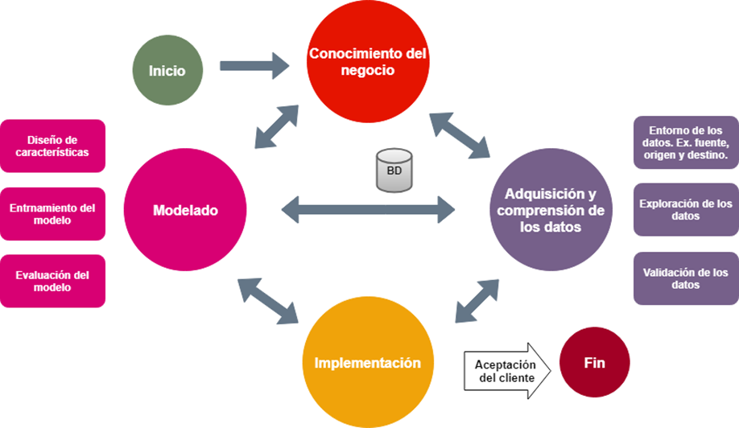

Ciclo de vida de un proyecto de Ciencia de datos
El Proceso de ciencia de datos en equipo ofrece un ciclo de vida recomendado que se puede usar para estructurar los proyectos de ciencia de datos. Los principales pasos consisten en:
- Conocimiento del negocio.
- Adquisición y comprensión de los datos.
- Modelado.
- Implementación y aceptación del cliente.

Figura: Un proyecto en Ciencia de datos se compone de varios pasos que no son necesariamente secuenciales, de un paso se puede ir a cualquier otro en el ciclo del proyecto.
Conocimiento del negocio
En esta fase se abordan tareas como:
- Definición de objetivos: trabaje con el cliente y con otras partes interesadas para comprender e identificar los problemas de la empresa. Formule preguntas que definan los objetivos empresariales y a las que puedan aplicarse las técnicas de ciencia de datos.
- Identifique los orígenes de datos: busque los datos pertinentes que lo ayuden a responder a las preguntas que definen los objetivos del proyecto.
- Defina las métricas del éxito: deben cumplir los requisitos SMART (específicas, mensurables, alcanzables, relevantes y con un límite de tiempo)
Adquisición y comprensión de los datos
El objetivo es generar un conjunto de datos limpio y de alta calidad cuya relación con las variables de destino se entienda. En esta fase se abordan tres tareas principales:
- Introducción de los datos en el entorno de análisis.
- Exploración de los datos para determinar si su calidad es suficiente para responder a la pregunta.
- Configuración de una canalización de datos para puntuar los datos nuevos o que se actualizan con regularidad.(Ej. Basada en lotes, streaming o en tiempo real, híbrido)
Modelado
El objetivo es crear un modelo de aprendizaje automático informativo que predice el objetivo con la máxima precisión. En esta fase se abordan tres tareas principales:
- Diseño de características: consiste en incluir, agregar y transformar variables sin procesar para crear las características que se utilizan en el análisis.
- Entrenamiento del modelo: busque el modelo que responda a la pregunta con la máxima precisión comparando sus métricas de éxito.
- dividir los datos de entrada aleatoriamente,
- compilar los modelos con los datos de entrenamiento,
- evaluar el entrenamiento y el conjunto de datos de prueba,
- determinar la mejor solución.
Implementación
La tarea principal que se aborda en esta fase es la siguiente:
- Uso del modelo: Cuando ya disponga de un conjunto de modelos que funcionan bien, los puede hacer operativos para que los consuman otras aplicaciones. Dependiendo de los requisitos empresariales, se realizan predicciones en tiempo real o por lotes.
- Exponer el modelo con una interfaz API que permita que se utilice fácilmente por diferentes aplicaciones, tales como: sitios web, hojas de cálculo, paneles, etc.
Aceptación del Cliente
Objetivo: finalización de los resultados del proyecto. En esta fase se abordan dos tareas principales:
- Validación del sistema: confirme que el modelo implementado y la canalización cumplen las necesidades del cliente.
- Entrega del proyecto: entregue el proyecto a la entidad que va a ejecutar el sistema en producción.